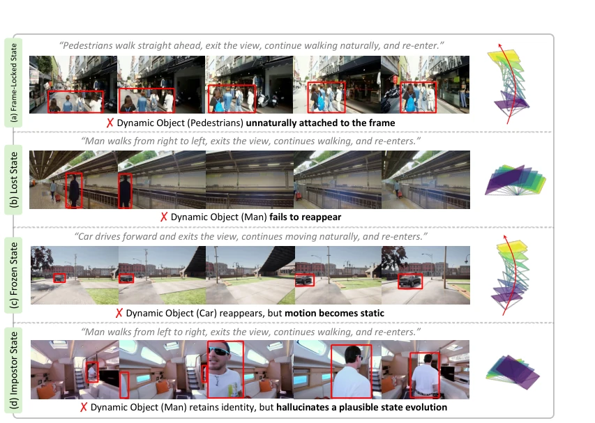
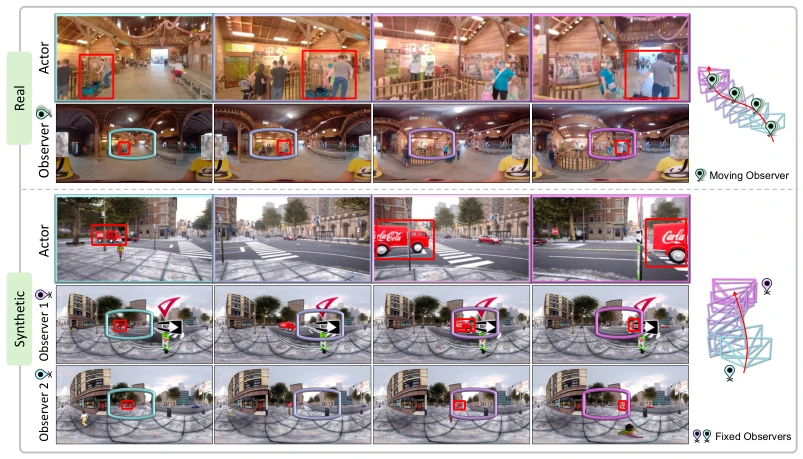
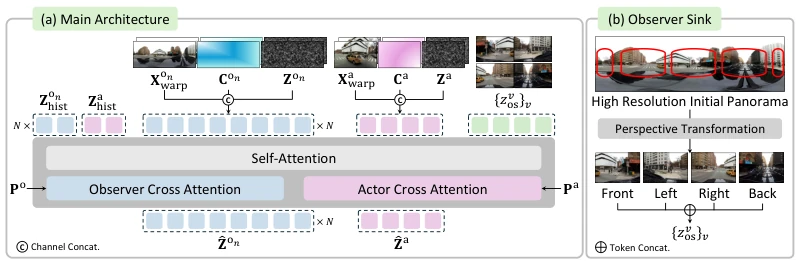
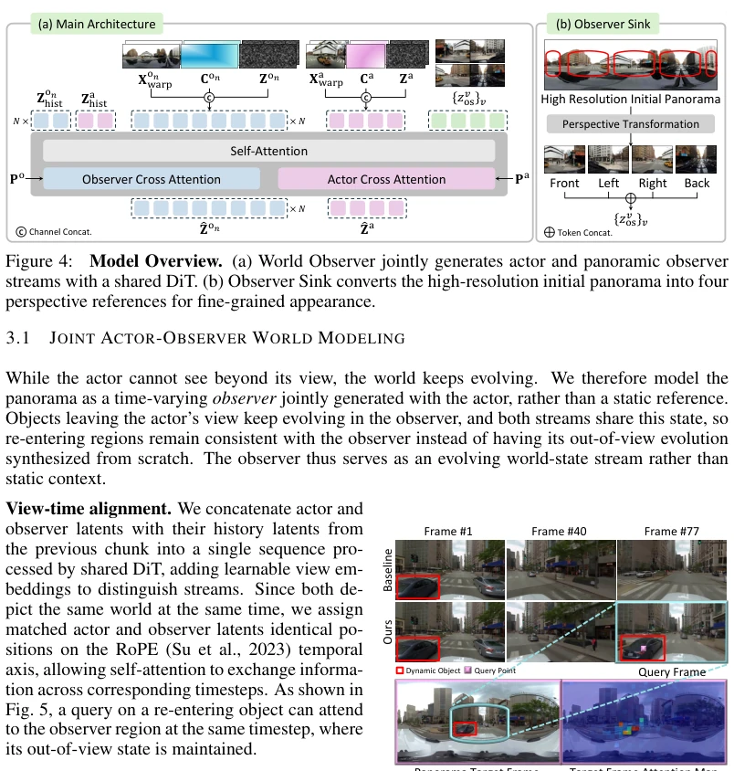
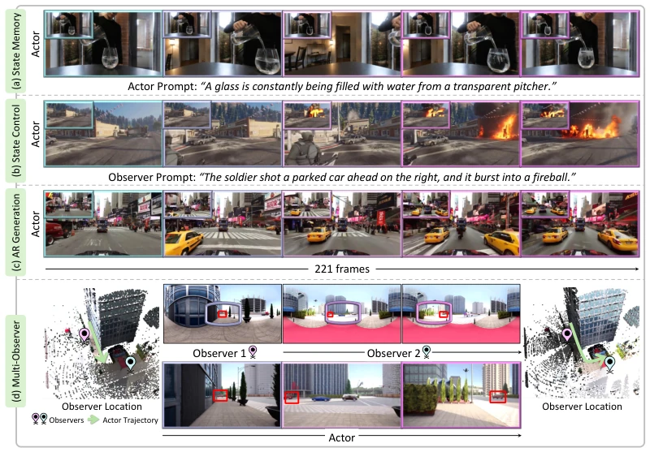
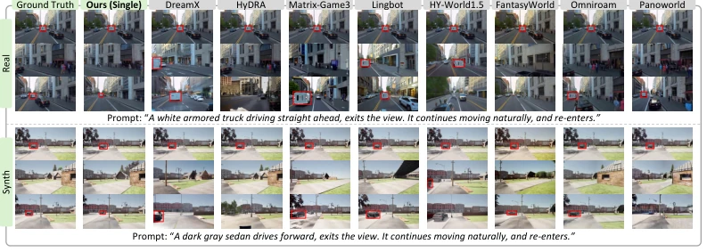
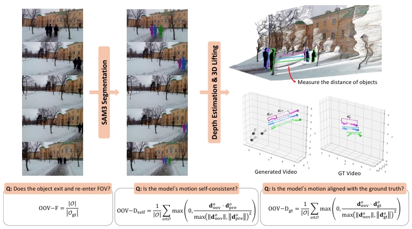
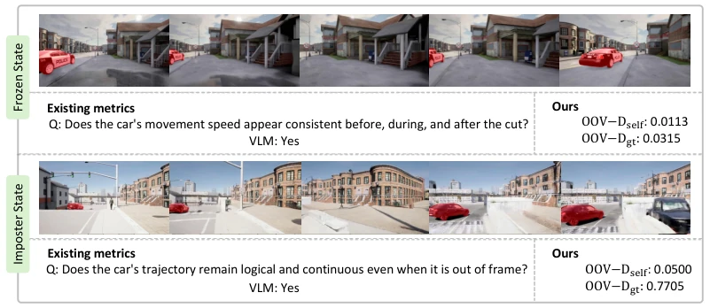
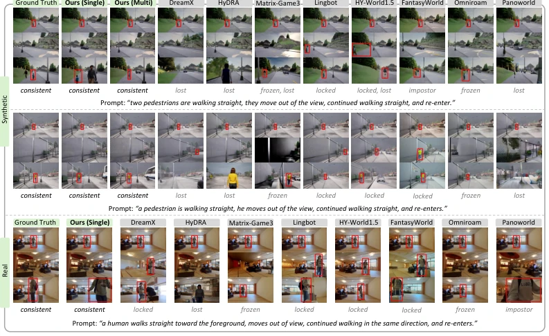
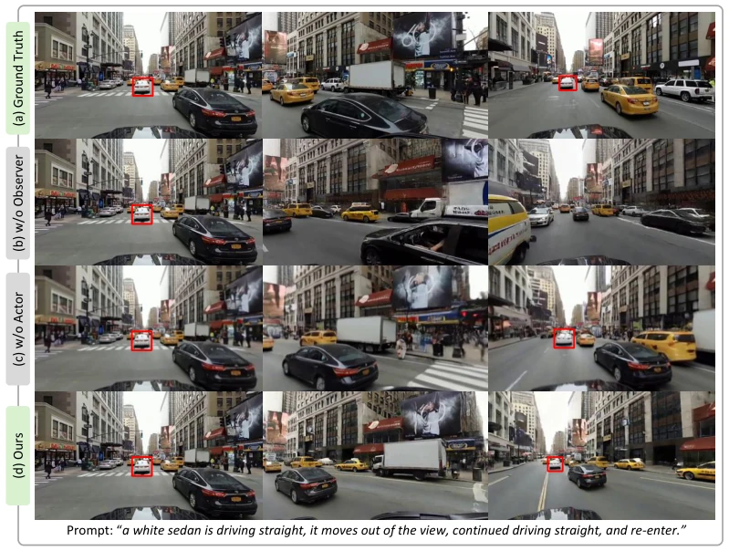

World Observer: Joint Actor-Observer Generation for Persistent World Modeling
Hyunwook Choi, Dahyun Chung, Hyunsung Kim, Siyoon Jin, Jinhyeok Choi, Junyoung Seo abspdf
论文点评Review
这篇论文试图解决世界模型“眼不见心不烦”的顽疾。传统模型一旦物体离开视野，往往直接遗忘或幻觉出错误状态，World Observer 搞了个“双视角”架构，一个 Actor 负责看，一群 Observer 负责盯着盲区。这思路挺香，毕竟物理世界不会因为你转头就消失。不过，依赖合成数据训练多 Observer 配置是个隐患，真实世界的遮挡逻辑比 CARLA 复杂多了。Observer Sink 加高分辨率参考是个亮点，解决了全景图的畸变问题，但计算开销肯定上去了。总的来说，Persistent World Modeling 是个好方向，但这“多眼观世界”的代价，后续得看推理速度能不能扛住，以及泛化到复杂动态场景的能力。
This paper attempts to address the chronic issue of "out of sight, out of mind" in world models. Traditional models, once an object leaves the field of view, often directly forget or hallucinate incorrect states. World Observer implements a "dual-view" architecture, where one Actor is responsible for viewing, and a group of Observers are responsible for monitoring blind spots. This approach is quite attractive, after all, the physical world does not disappear just because you turn your head. However, relying on synthetic data to train multi-Observer configurations is a potential hazard, as the occlusion logic in the real world is much more complex than in CARLA. Observer Sink combined with high-resolution references is a highlight, solving the distortion problem of panoramic images, but the computational cost has definitely increased. Overall, Persistent World Modeling is a good direction, but the cost of this "multi-eye observation of the world" will depend on whether the inference speed can withstand it, and the ability to generalize to complex dynamic scenes.
研究动机Motivation
现有世界模型（如 NVIDIA et al., 2025; DreamX Team et al., 2026）大多以 Actor 为中心，一旦物体离开视野，模型就失去直接视觉证据，导致状态演化中断。Lu et al., 2026 指出这会引起状态漂移。论文观察到四种失败模式：Frame-locked（物体被锁在帧上）、Lost（消失后回不来）、Frozen（动态停止）、Impostor（状态幻觉）。Chen et al., 2026b 提到内部记忆补偿也不够，因为推断未观测演化越来越不确定。核心问题是世界状态维护与 Actor 观察绑定，无法独立追踪未观测区域。这对具身导航（Li et al., 2025a）和长程规划至关重要，因为环境演化不应受限于当前视角，否则 Agent 无法推理视野外的世界变化。
Existing world models (such as NVIDIA et al., 2025; DreamX Team et al., 2026) are mostly Actor-centric. Once an object leaves the field of view, the model loses direct visual evidence, causing state evolution to interrupt. Lu et al., 2026 point out that this causes state drift. The paper observes four failure modes: Frame-locked (object locked on frame), Lost (cannot return after disappearing), Frozen (dynamic stop), Impostor (state hallucination). Chen et al., 2026b mention that internal memory compensation is also insufficient, because inferring unobserved evolution becomes increasingly uncertain. The core problem is that world state maintenance is bound to Actor observation, unable to independently track unobserved regions. This is crucial for embodied navigation (Li et al., 2025a) and long-horizon planning, because environment evolution should not be limited by the current viewpoint, otherwise the Agent cannot reason about world changes outside the field of view.

Figure 2: Motivation. When dynamic objects leave the actor’s view, existing models exhibit four failures: (a) frame-locked, (b) lost, (c) frozen, and (d) impostor state. These failures show the diffi- culty of maintaining and evolving states without direct observations during out-of-view intervals.

Figure 3: Dataset Overview. Real-world (top) and synthetic (bottom) examples with moving and two-fixed-observer configurations, respectively. Colored boxes show cross-view correspondences, while the rightmost diagrams show camera configurations and trajectories.
方法Method
整体采用共享 DiT 联合生成 Actor 视角视频和 Observer 全景视频。数据流上，Actor 接收相机轨迹和文本提示，Observer 接收独立轨迹。创新点 1：基于共享初始全景图（initial panorama）进行 Warping，建立 Actor 与 Observer 间的显式几何对应，确保 3D 一致性。创新点 2：引入 Observer Sink，从初始全景图裁剪四个高分辨率视角作为固定参考，通过 Attention 机制让 Actor 在物体回归时获取精细外观，弥补全景图畸变。创新点 3：支持灵活 Observer 放置，包括单 Observer 独立移动和多 Observer 覆盖不同区域。训练使用 Flow Matching，Actor 和 Observer 共享时间步，允许 Self-Attention 交换未观测状态信息。Latent 空间通过 3D VAE 编码，历史 Latent 用于自回归生成，确保长程一致性。
Overall, it adopts a shared DiT to jointly generate Actor viewpoint videos and Observer panoramic videos. In terms of data flow, the Actor receives camera trajectories and text prompts, while the Observer receives independent trajectories. Innovation 1: Perform Warping based on a shared initial panorama, establishing explicit geometric correspondence between Actor and Observer, ensuring 3D consistency. Innovation 2: Introduce Observer Sink, cropping four high-resolution views from the initial panorama as fixed references, using the Attention mechanism to allow the Actor to obtain fine appearance when objects return, compensating for panoramic distortion. Innovation 3: Supports flexible Observer placement, including single Observer independent movement and multi-Observer covering different areas. Training uses Flow Matching, Actor and Observer share timesteps, allowing Self-Attention to exchange unobserved state information. Latent space is encoded via 3D VAE, historical Latent is used for autoregressive generation, ensuring long-range consistency.

Figure 4: Model Overview. (a) World Observer jointly generates actor and panoramic observer streams with a shared DiT. (b) Observer Sink converts the high-resolution initial panorama into four perspective references for fine-grained appearance.

Figure 5: Visualization of self-attention. A query on a re-entering object attends to the observer region holding its out-of-view state, while the object fails to re-enter after out-of- view interval in non-joint model (Baseline).

Figure 6: Qualitative results. World Observer supports (a) state memory, (b) observer-prompted control, (c) long-horizon generation, and (d) multi-observer. Insets show the observer views.
The dataset includes real panoramic videos and CARLA synthetic data (Dosovitskiy et al., 2017). Evaluation introduces three new metrics: OOV-F (valid entry/exit), OOV-Dgt (ground truth dynamic compliance), OOV-Dself (self-consistency). Comparison baselines include HyDRA, HY-World, etc. Results show World Observer is significantly superior to baselines on OOV metrics, and visual fidelity (FID/FVD) remains competitive. Ablation experiments prove Joint Generation and Observer Sink are indispensable; removing Observer leads to Impostor state, removing Sink reduces appearance quality. Multi-Observer configuration further improves OOV-F. On benchmarks in real and synthetic scenarios, the model demonstrates stronger state retention capabilities, proving the effectiveness of decoupling observation and action.

Figure 7: Qualitative comparisons with other models. Red boxes mark target objects before exit and after re-entry. While existing models often lose, freeze, or inconsistently reconstruct them, World Observer better preserves object identity and state evolution across out-of-view intervals.

Figure 8: Out-of-view dynamics evaluation protocol. We track dynamic objects in 3D to evaluate their exit and re-entry (OOV-F) and motion consistency during out-of-view intervals (OOV-Dself and OOV-Dgt).

Figure 9: Comparison with existing Out-Of-View metrics. VLM-based metrics fail to identify frozen and impostor states as inconsistent, while our 3D displacement-based metrics quantitatively capture these failures.

Figure 10: Additional qualitative comparisons with other models. We provide additional compar- isons of World Observer with existing world models on real and synthetic scenes involving out-of- view dynamics. For synthetic scenes, we additionally include results from World Observer (Multi). Red boxes highlight the target objects before exit and after re-entry. Across diverse objects, mo- tions, and scenes, existing models exhibit out-of-view failures such as lost, frozen, and impostor states, whereas World Observer consistently preserves object identity and state evolution throughout the out-of-view interval.

Figure 11: Qualitative ablation results. We show the effect of removing each component on generation quality. Without the observer, the model fails to maintain out-of-view dynamics, causing the dynamic object to disappear when it re-enters the view. Without the actor, panorama-based generation followed by cropping leads to reduced visual fidelity. World Observer preserves evolving out-of-view dynamics while maintaining high-fidelity generation.